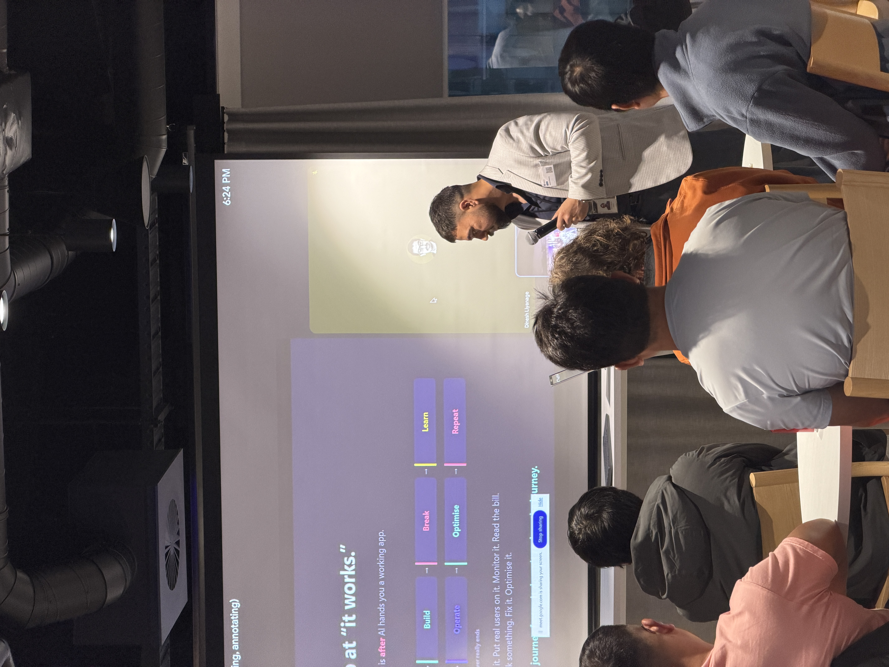
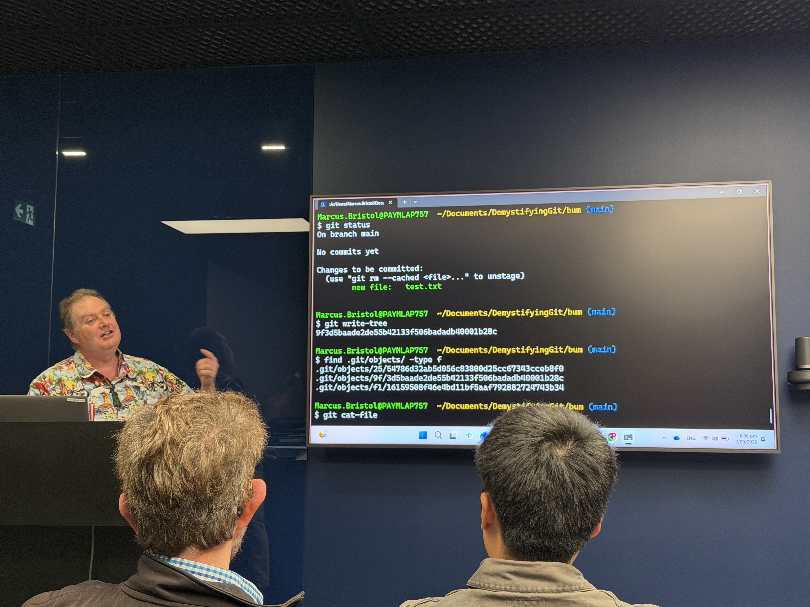
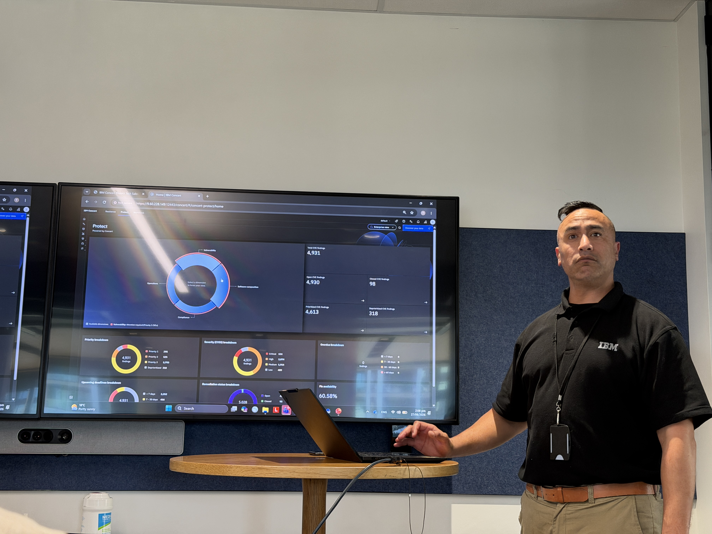
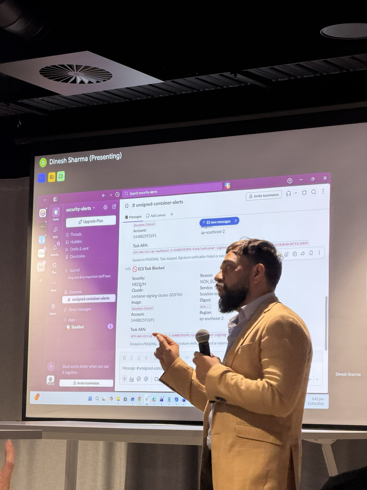
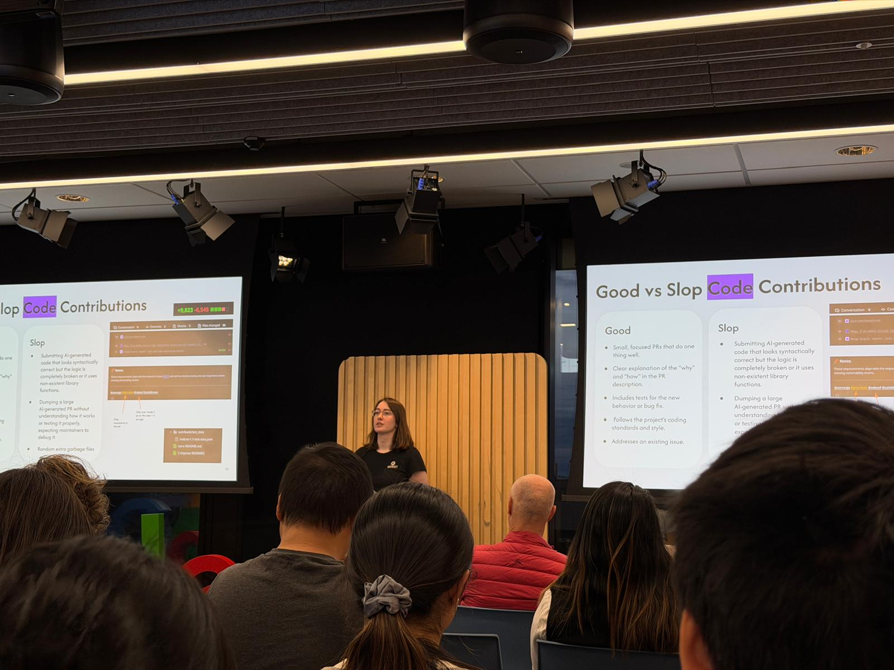
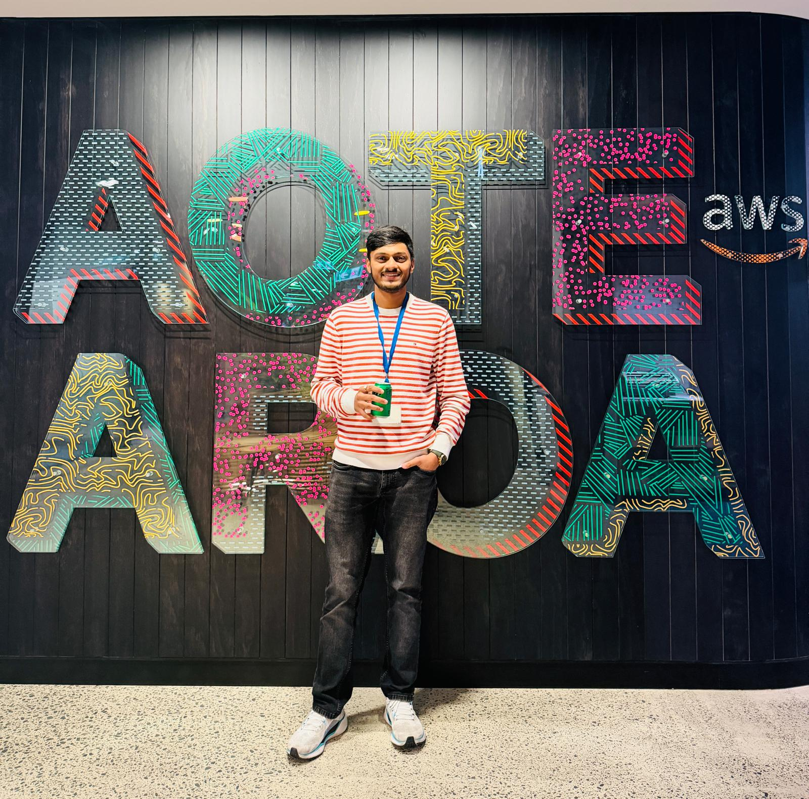

BLOG
Thoughts, experiences, stories and things I've learned along the way.
Notes on building products, learning in public, and finding the useful idea in the work.

From Vibe Coding to Production AI on AWS
Notes from an Auckland AWS meetup on turning AI experiments into reliable production systems.
Read More
Spent my evening diving into the internals of Git
A few notes from Demystifying Git with the NZ GitHub User Group.
Read More
IBM TechXchange, what an incredible experience!
Learning how modern security teams combine automation, resilience, and DevSecOps.
Read More
AWS Tools and Programming April Meetup
An evening of knowledge graphs, ECS supply chain security, and cloud community connections.
Read More
Contributing to Open Source With AI Responsibly
An eye-opening session on meaningful contributions, AI slop, and responsible open source work.
Read More
AWS Auckland Well-Architected User Group Meetup
AWS best practices, cost optimization, container security, and building AI agents.
Read MoreSupporting the Child Cancer Foundation on Queen Street
Volunteering during the Street Appeal fundraiser with friends and the Student Volunteer Army.
Read More